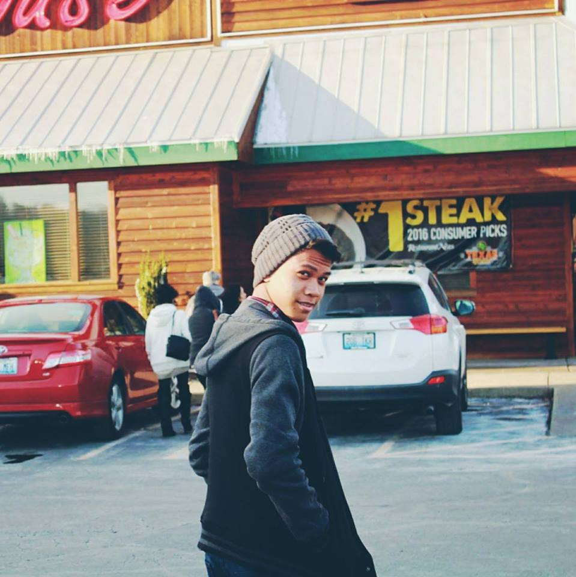
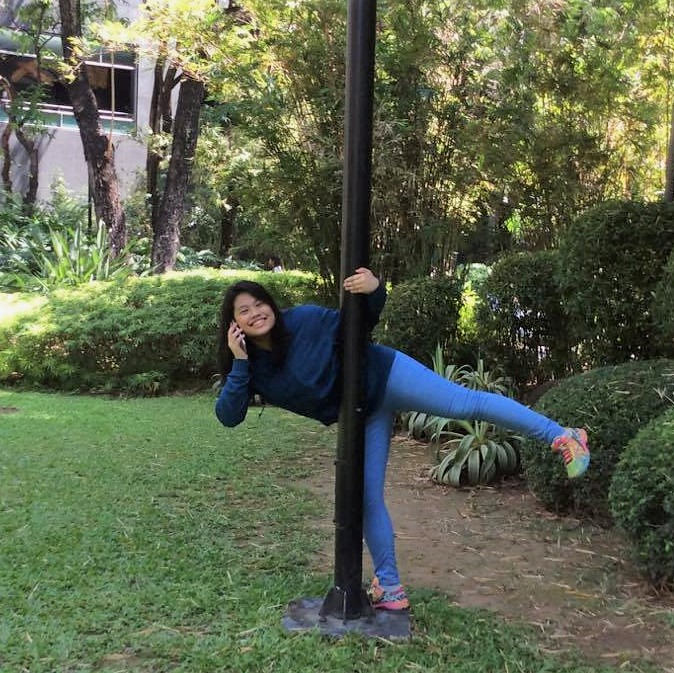

Group 8
Gian Catibog
I am Ron Gian Aleksei P. Catibog, I usually spend my time playing videogames and reading books. I used to play the violin and the guitar, but right now, I play the piano.
e-mail: gian.aleksei@gmail.com

Gio Talento
I’m Joshua Talento, but my friends call me Gio because it has a better ring to it. I like watching Japanese animated films, and playing foreign games. I’ve taken a liking to music when I was about seven years old, and that’s when I decided to learn the drums.
e-mail: joshuatalento10@gmail.com
Franc Magpayo
Hi, I'm Linerwin-Franc Magpayo or Lin for short. I don't really know music or instruments in general, but I used to play the violin before. My friends say I look like a horse but I don't see it.
e-mail: linerwinmagpayo@gmail.com

Frances Chua
Yo! I'm Frances, but I usually answer to France or Ces. I enjoy playing League of Legends, reading books, and writing stories. The only instruments I know how to play are the lyre and bass guitar. I used to be a part of my old school's band as the bassist and lead vocalist.